80% of users didn't know what to ask about their pension. The existing portal had everything — policy details, fund breakdowns, historical data. But it presented it as a data dump: small text, no visual hierarchy, no clear entry point.
The research started with people, not data models — user interviews, a competitive pass across pension platforms, and a full audit of the legacy system. The findings were less about features and more about feelings.
"Not 'what data do we have?' but 'what are the questions forming in someone's head at 11pm when they finally open their pension portal for the first time?'"
The reframe changed everything. Stop organizing around data structure. Start organizing around user anxiety. The entry point became the answer to the question they hadn't yet found the words to ask. If a children's illustration can make pension understandable, professional software has no excuse.
The architecture was rebuilt around the flow a person actually follows: status overview first, savings breakdown by choice, fund detail on demand. Every component was mapped to the question it answers before it was sketched.
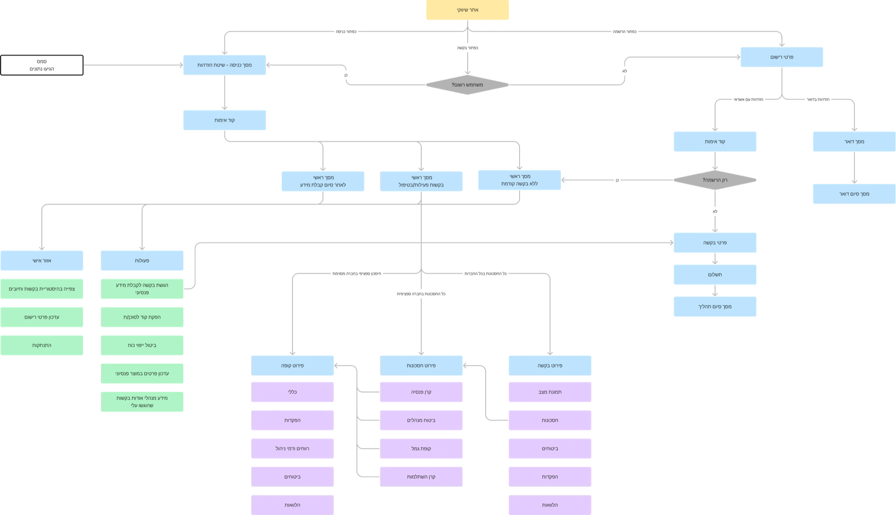
Success was defined in the saver’s terms — comprehension, not clicks.
Five decisions carried the answers from the research to the screen.
Every component answers something a real person actually asks, in short, friendly, eye-level language. No data categories, no jargon, just the thing you wanted to know.
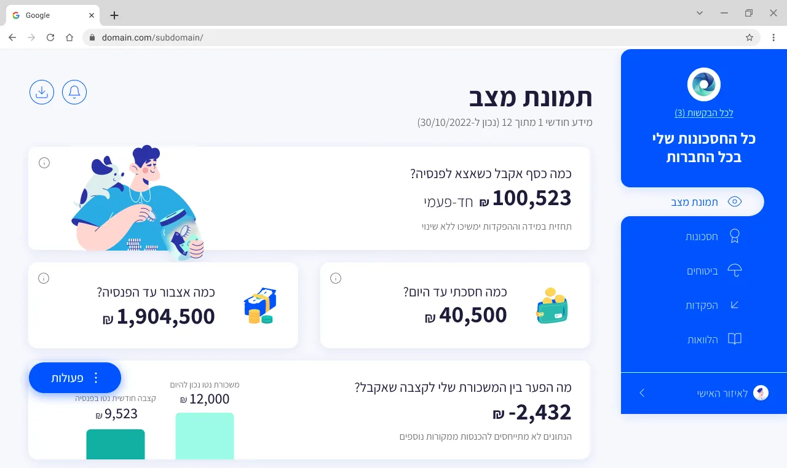
We wanted the interface to feel simple and light, yet current. Charts make the numbers understandable to anyone, and consistent color coding tells you where things stand at a glance, especially when the screen is full of figures.
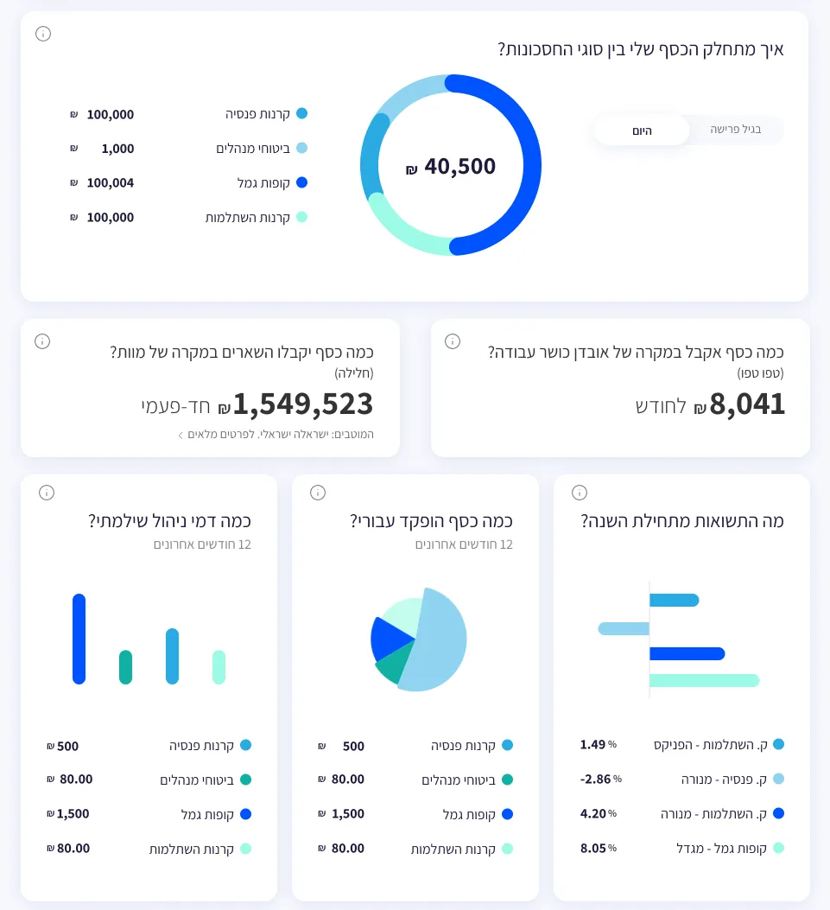
The data is shown as it is. Nothing hidden, but nothing dumped either: details are revealed gradually, by focused topic, so they can actually be digested. You start from the status picture, dive into your savings, and from there into a specific fund.
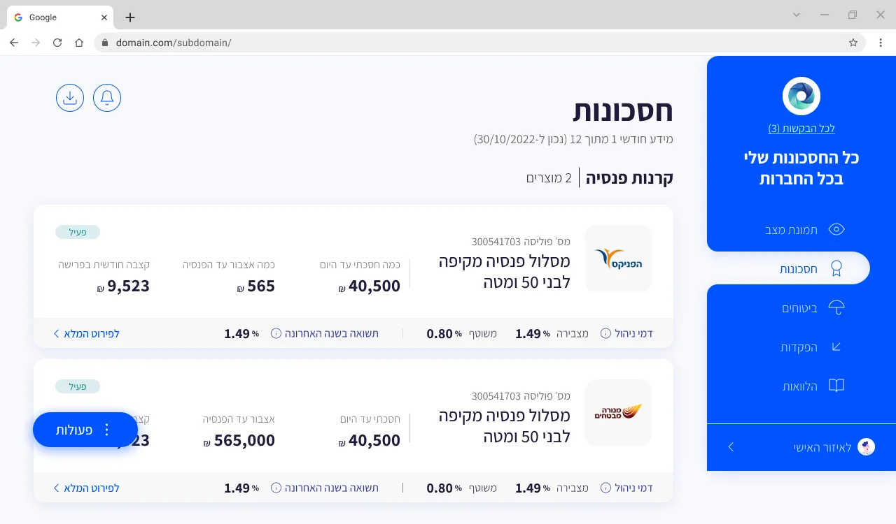
We keep it light, but this is a field with professional terms you have to know. So wherever one appears, an i icon opens a tooltip with a proper explanation. Depth for those who want it, invisible for those who don't.
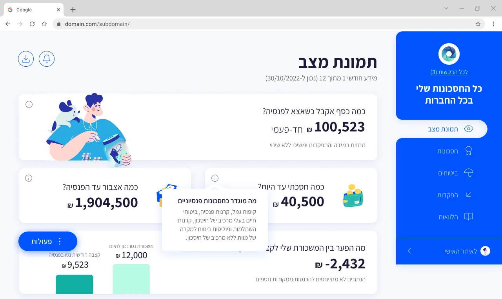
The request is split into cards, each one a single question with a single answer, so filling it in becomes a natural dialogue about the pension information you want.
Fund detail is an accordion, but a closed section is never an empty row. Each one surfaces the single most important value it holds: the expected balance at retirement, the retirement age, the employer, the beneficiaries. Collapsed, the page reads as a quick overview at a glance; open a section only when you want the full breakdown.
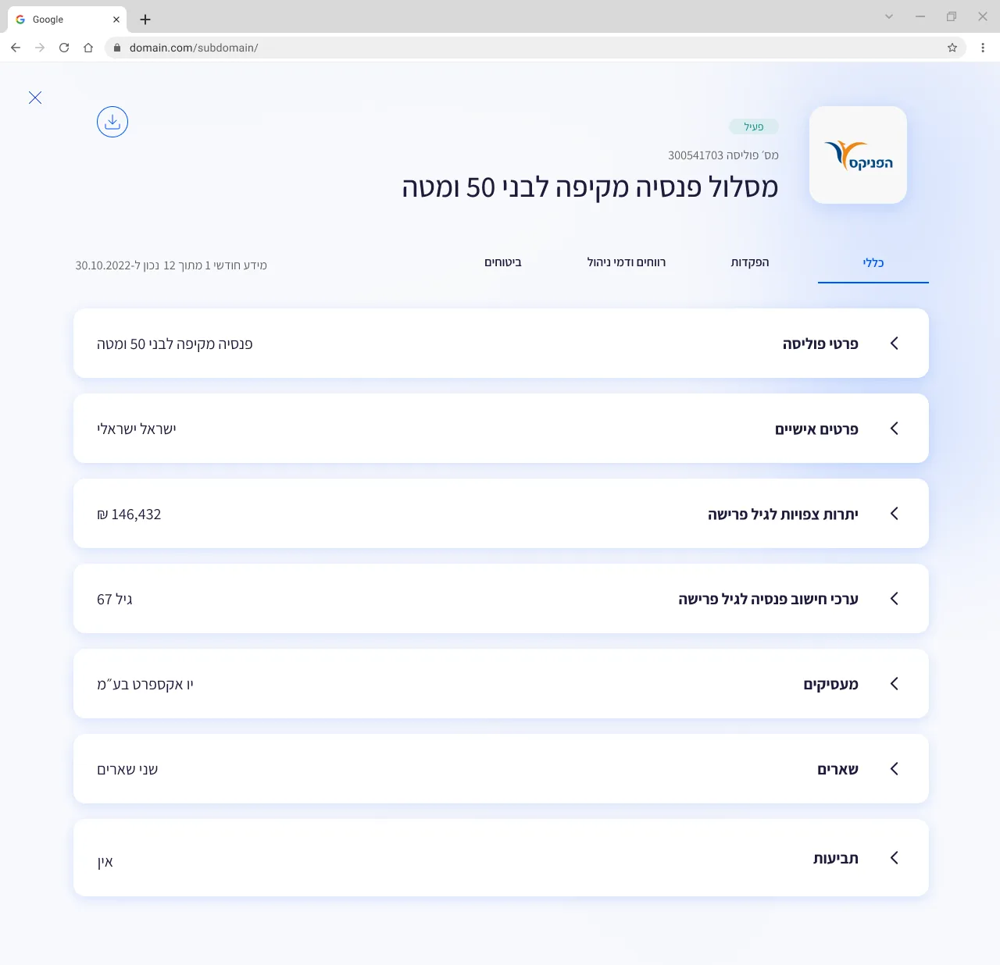
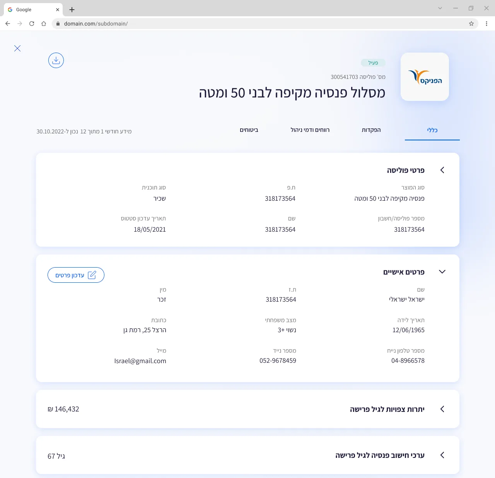
Deposits arrive as a long table, year by year, line by line. So the page opens with the sum instead: one number for everything paid into the fund, split into who paid what, drawn as a single bar in three colors. The picture answers first; the table is there for whoever wants to check the lines.
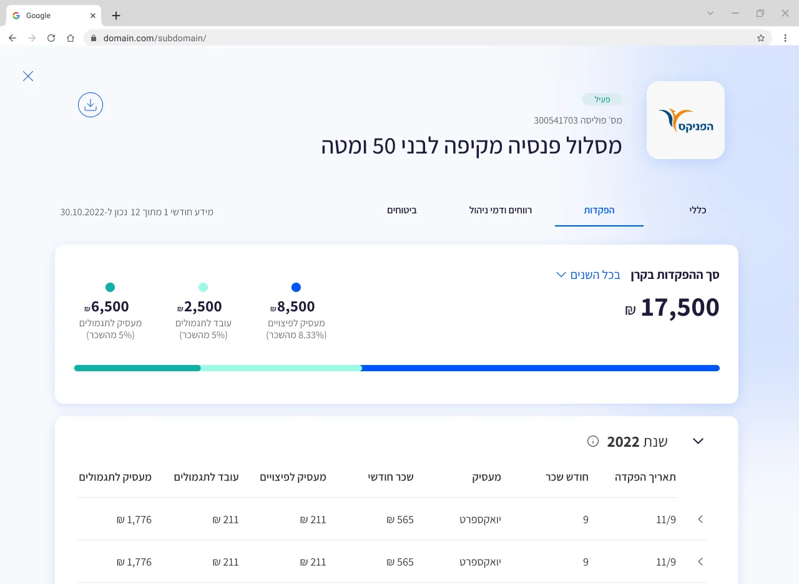
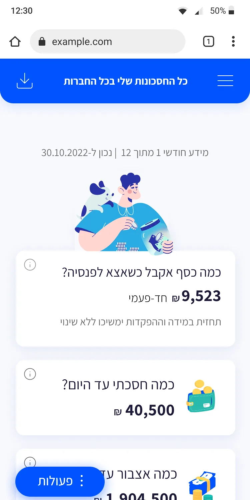
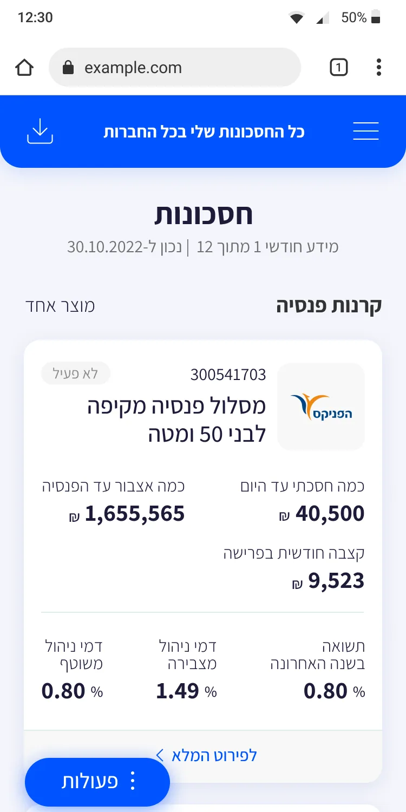
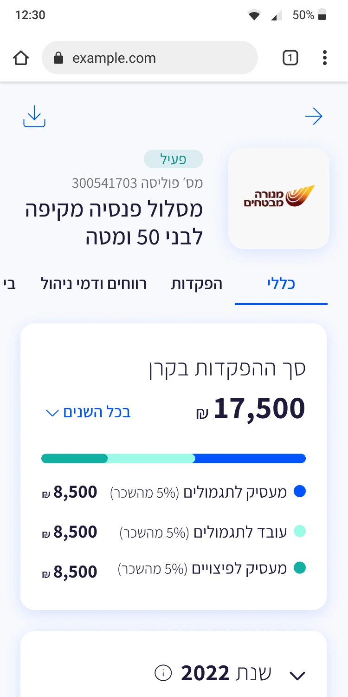
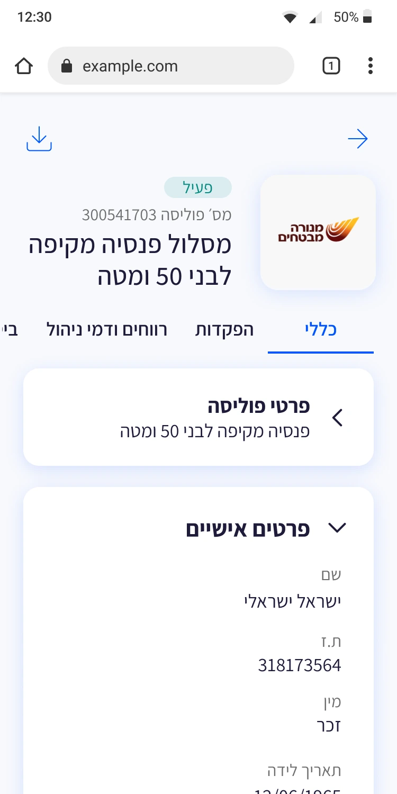
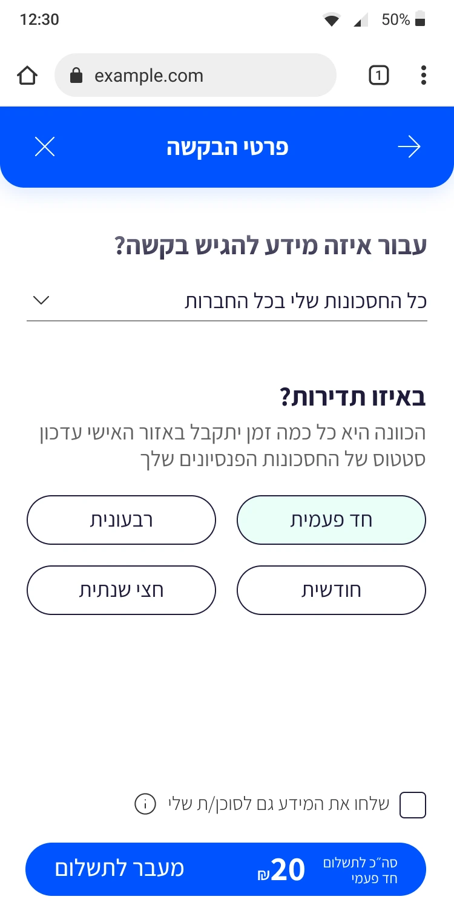
Users can understand their savings status in one scroll. Complex pension data restructured around actual user questions. Progressive disclosure serves both first-time users and financial-savvy users.
The blog versionThe platform shipped before the AI era. Today, the same question-first thinking would go further — AI sitting inside the answers, not beside them.
Type or say the question — 'how much will I have at 67?' — and the answer arrives in plain language, with the number and how it was calculated.
A personal summary generated per saver: 'You're on track. Two funds, one gap worth checking.' The children's-explanation principle, automated.
Explanations matched to the reader: first-timers get the analogy, savvy users get the formula. Same term, right depth for each.
Upload any pension letter; it comes back as three plain sentences — what changed, what it means, what to do.
Led the project from discovery to delivery, owning the UX and product definition across two interfaces. I drove research, flows, wireframes, client alignment, development guidance, and QA, while directing the UI work delivered by a second designer.